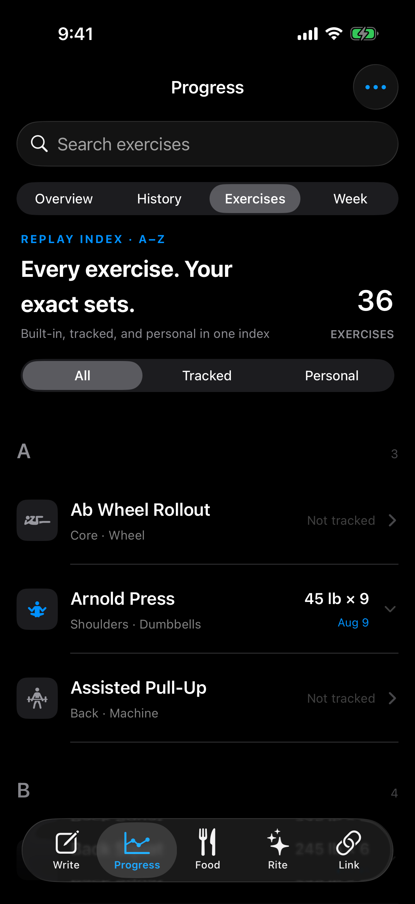
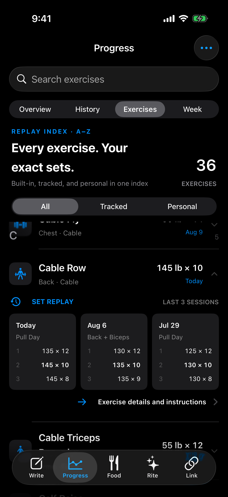
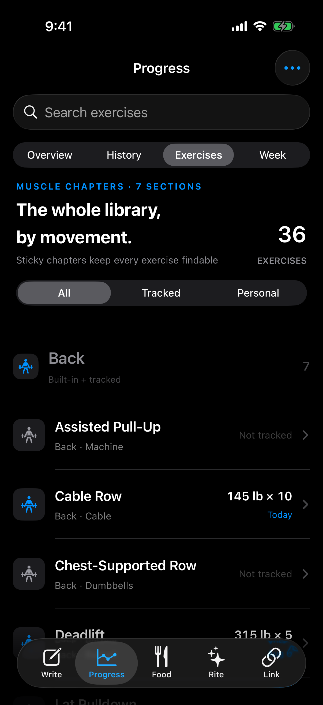
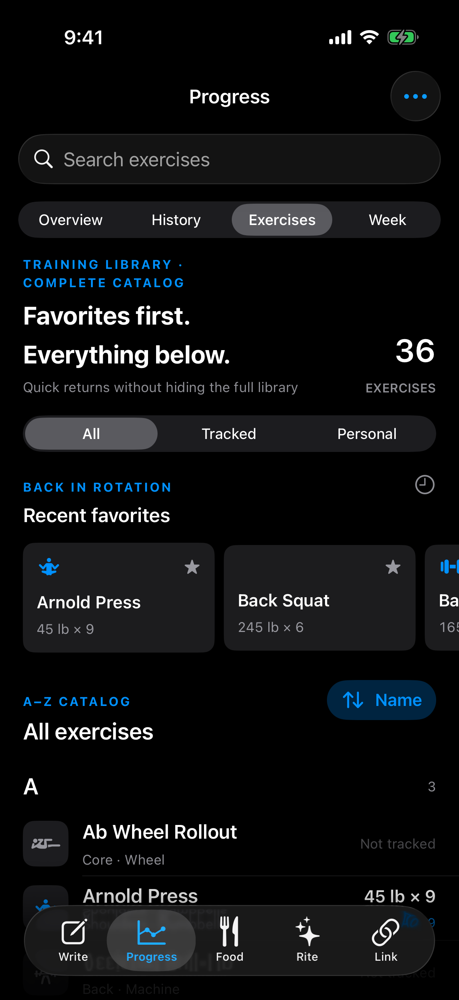
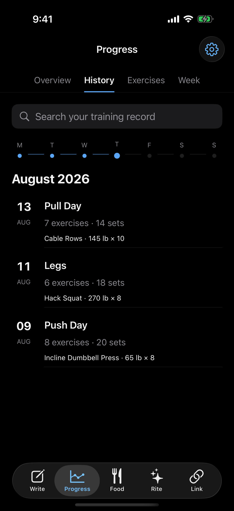

Progress → Exercises
Three complete-catalog directions rendered from the native SwiftUI prototype. Every option keeps built-in, tracked, untracked, and personal exercises visible.
Xcode 26.4 build passed · iPhone simulator · dark appearance · Build 61 production files unchanged
01
Replay Index
A fast alphabetical catalog with exact recent sets available inside tracked rows.
Recommended direction
- The screen opens as a full A–Z exercise list.
- Tracked rows show only confirmed results.
- Opening a tracked row reveals three exact sessions without leaving the catalog.


02
Muscle Chapters
The full library grouped into strong, sticky movement chapters.
- Back, Chest, Legs, Shoulders, Arms, Core, Cardio, and Personal remain part of one catalog.
- Chapter counts make the scale of the library obvious.
- Rows stay compact and show tracked and untracked states together.

03
Training Library
One compact recent-favorites shelf, followed immediately by the complete A–Z catalog.
- Frequent exercises are faster to return to.
- The shelf never replaces or obscures the library.
- Native sorting supports name, recency, muscle, and equipment.

History stays locked

Training Timeline · Session Timeline
The original History direction remains saved: compact week rail, date column, August grouping, exact session titles, exact exercise highlights, and simple separators.